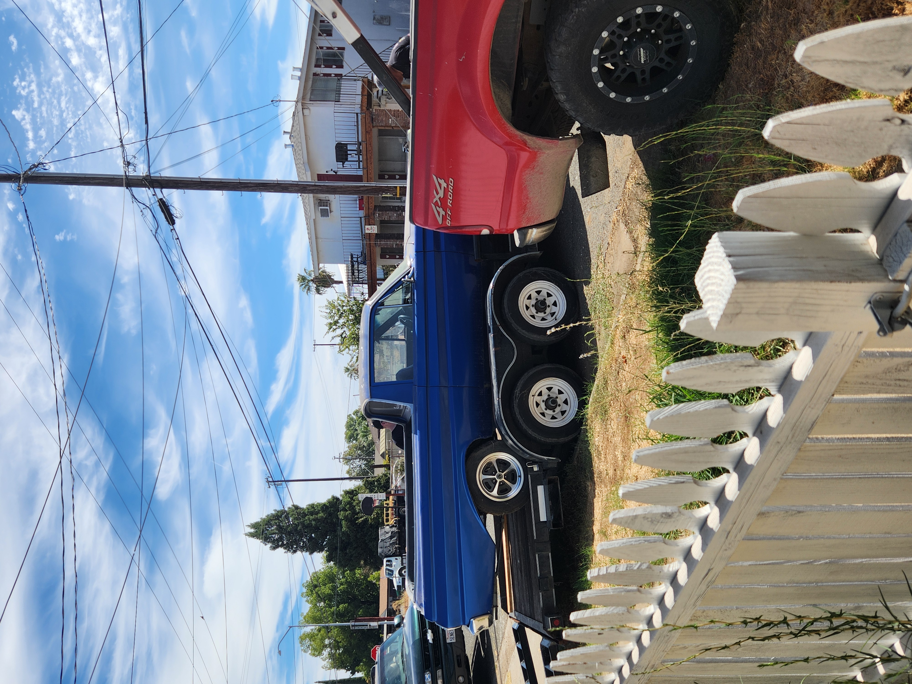
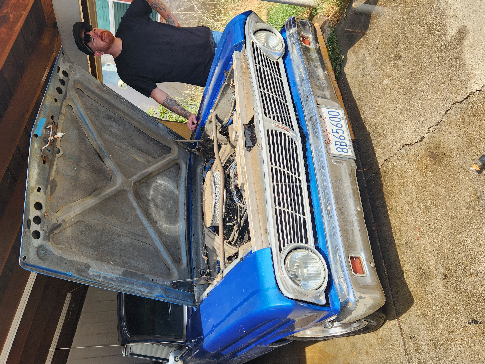

The Beginning
The Day It Came Home.
A 1965 Ford Ranchero and a long list of things to figure out. Exactly the kind of project I like.


Build · 1965 Ford Ranchero
Old cars don't come with instructions for everything that's gone wrong over the last sixty years. You look, listen, figure out what somebody else did, fix what needs fixing and keep moving.
The Beginning
A 1965 Ford Ranchero and a long list of things to figure out. Exactly the kind of project I like.


Milestone
There's a point in every project where a pile of individual fixes finally becomes a machine again. This was that point.
Ranchero
The moment the Ranchero came back to life.
The Little Things
Of course “real quick” is how half the projects start. See something wrong. Figure out why. Make it work the way it should.
Fix It
One more thing that wasn't right. One more thing that is now.
More Builds
Cars, engines, fabrication, electrical work and whatever other problem happens to land in front of me.
← Back to Build